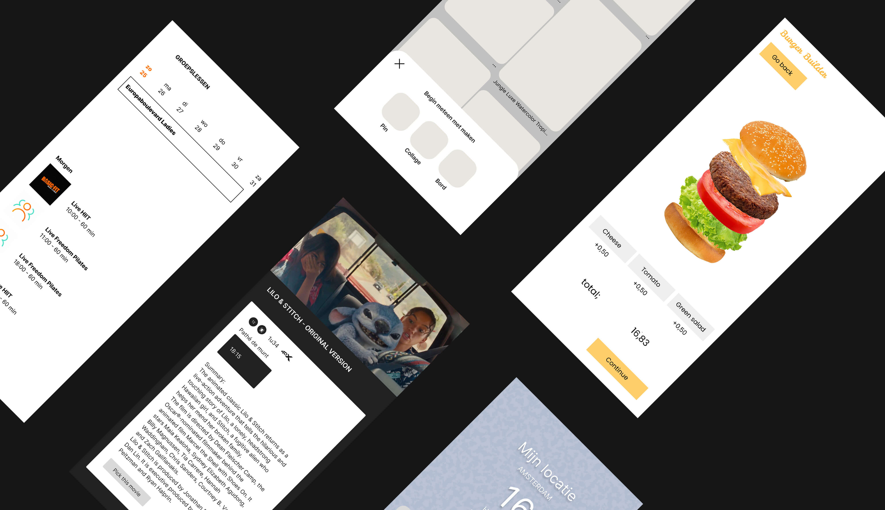
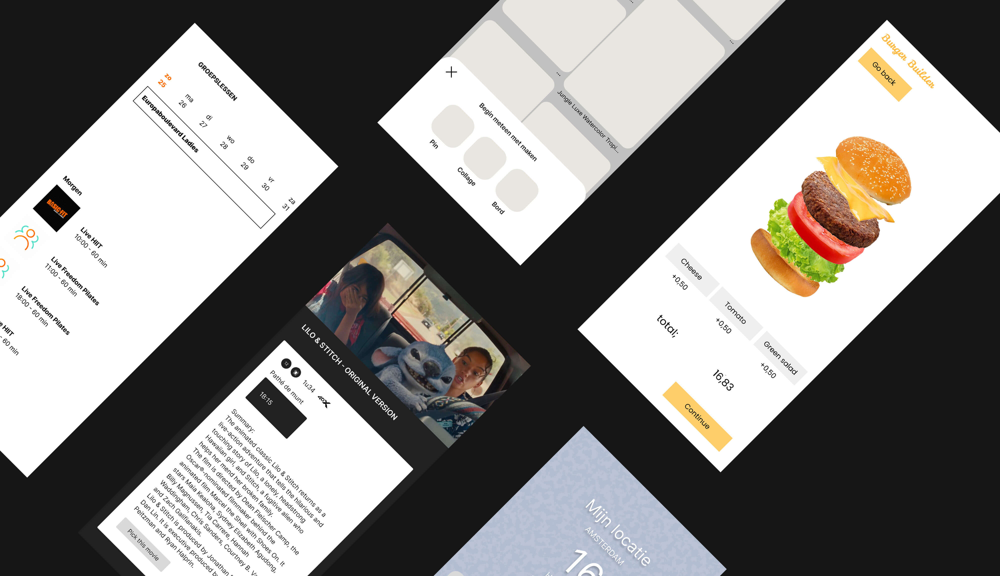
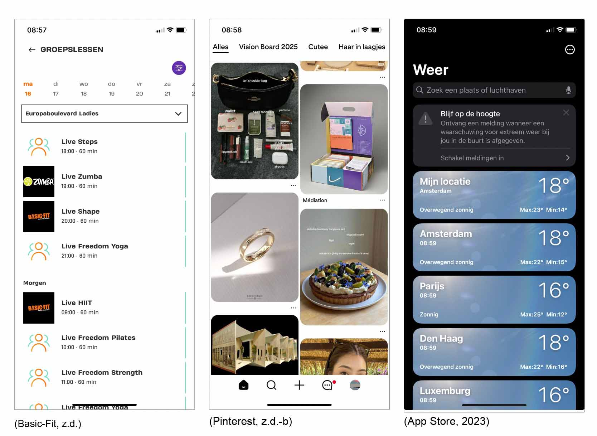
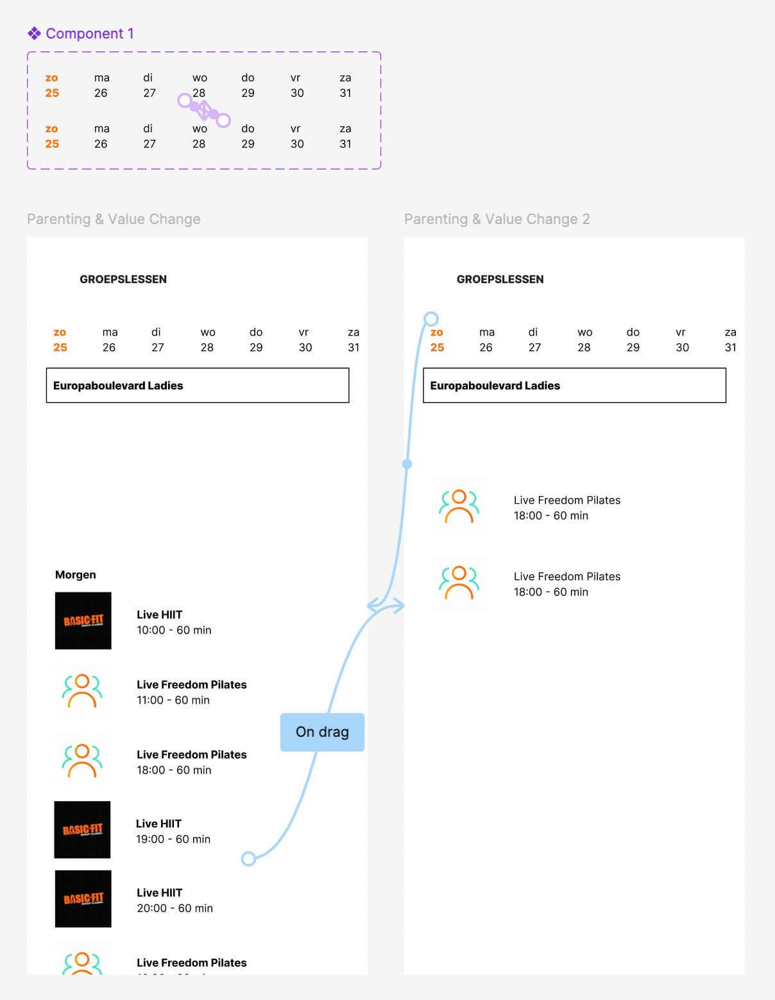
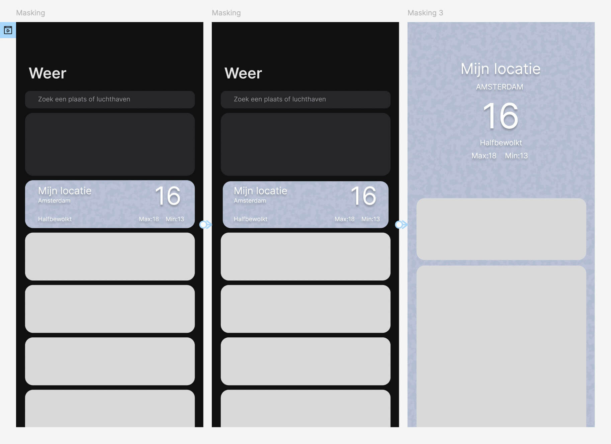

UX in Motion
Duur van vak
2.5 maand
Werkvorm
Individueel werk
Tools
Figma
Photoshop
Opdrachten
Voor het vak UX in Motion hebben we veel geleerd over motion design en hoe je motion design kunt gebruiken om je interface o.a te kunnen verduidelijke aan je gebruikers.
Motion design video
Motion design opdracht 1
Basic-fit app
Hier is het UX-principe parenting en value change van toepassing, omdat als je door alle groepslessen scrollt, de datums bovenaan ook meebewegen. Daarnaast is er sprake van value change omdat je duidelijk de cijfers/datums ziet veranderen terwijl je scrollt. Dit is bedoeld zodat gebruikers, terwijl ze naar de lessen kijken, ook meteen kunnen zien op welke data deze plaatsvinden. Proces/Uitdagingen: In deze animatie bewegen er twee objecten tegelijk, wat voor zover ik weet niet mogelijk is in Figma. Hierdoor bewegen de objecten nu wel, maar niet gelijktijdig.
Hier is het UX-principe overlay van toepassing, omdat wanneer je op het plus-icoon klikt, er een ander object over het onderliggende object heen wordt geplaatst en de achtergrond donkerder wordt. Dit gebeurt onder andere zodat de aandacht wordt gevestigd op de actie en gebruikers naar de juiste plek kijken. Proces/Uitdagingen: Ik dacht eerst dat de navigatiebalk onderin zichzelf vergrootte, maar bij het klikken op het plus-icoon bleek dat er een ander object over de navigatiebalk heen kwam en zo een overlay creëerde. Daarom moest ik dat aanpassen in het ontwerp.
Weer app
Hier is het UX-principe masking van toepassing, omdat het object van klein naar groot gaat en vervolgens de hele ruimte inneemt. Het object zelf blijft grotendeels hetzelfde, maar bevat meer informatie wanneer je erop klikt. Dit is bedoeld zodat gebruikers het gevoel krijgen dat ze het contentgebied worden ingetrokken en er echt in duiken. Proces/Uitdagingen: Geen.
Resultaat
HydraIntake, een persoonlijke water tracker. De app stuurt herinneringen via trillingen en meldingen op de Apple Watch en de telefoon om gebruikers te helpen gehydrateerd te blijven. Gebruikers kunnen hun drinkdoel en de hoeveelheid water die ze hebben gedronken direct zien op de app.